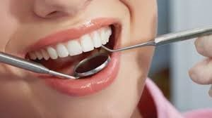

Pregled
Klinični pregled, kjer iščemo poškodbe in razjede oz. nepravilnosti, ki jih sami ne morete opaziti. Za dober pregled je nujna RTG (rentgenska slika). Zato smo opremljeni tako z lokalnim rentgenom kot tudi z ORTOPAN-om, ki je nujen za oceno stanja v ustni votlini.